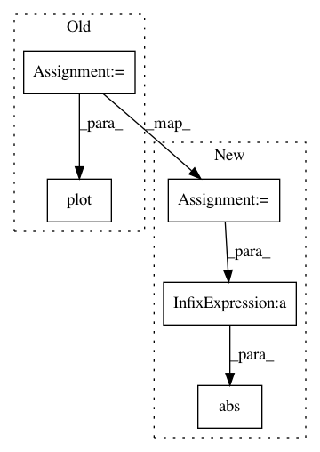

ea5d191f7f71b6fa927a96ef4e785c762a54d5db,examples/decoding/plot_oasis_vbm_space_net.py,,,#,14
Before Change
////// Fit and predict
decoder.fit(new_images, age)
coef_niimg = decoder.coef_img_
age_pred = decoder.predict(new_images).ravel()
////// Visualization //////////////////////////////////////////////////////////////////////////////////////////////////////////////////////////
import matplotlib.pyplot as plt
from nilearn.plotting import plot_stat_map
// weights map
background_img = dataset_files.gray_matter_maps[0]
plot_stat_map(coef_img, background_img, title="Graph-Net weights",
display_mode="z")
// quality of predictions
plt.figure()
linewidth = 3
ax1 = plt.subplot("211")
ax1.plot(age, label="True age", linewidth=linewidth)
ax1.plot(age_pred, "--", c="g", label="Fitted age", linewidth=linewidth)
ax1.set_ylabel("age")
plt.legend(loc="best")
ax2 = plt.subplot("212")
ax2.plot(age - age_pred, label="True age - fitted age", linewidth=linewidth)
ax2.set_xlabel("subject")
plt.legend(loc="best")
plt.show()
After Change
decoder = SpaceNetRegressor(memory="cache", penalty=penalty, verbose=2)
decoder.fit(X_train, y_train) // fit
coef_img = decoder.coef_img_
y_pred = decoder.predict(X_test).ravel() // predict
mse = np.mean(np.abs(y_test - y_pred))
////// Visualization //////////////////////////////////////////////////////////////////////////////////////////////////////////////////
// weights map
In pattern: SUPERPATTERN
Frequency: 3
Non-data size: 5
Instances
Project Name: nilearn/nilearn
Commit Name: ea5d191f7f71b6fa927a96ef4e785c762a54d5db
Time: 2015-07-28
Author: elvis.dohmatob@inria.fr
File Name: examples/decoding/plot_oasis_vbm_space_net.py
Class Name:
Method Name:
Project Name: jaakkopasanen/AutoEq
Commit Name: 33d9e781a40c634e98666ae9d7fe2f5932e3bd5f
Time: 2018-08-19
Author: jaakko.o.pasanen@gmail.com
File Name: biquad.py
Class Name:
Method Name: main
Project Name: nilearn/nilearn
Commit Name: ba96096f784a73ce0d14b0b72e757c0fdbf331db
Time: 2015-07-28
Author: elvis.dohmatob@inria.fr
File Name: examples/decoding/plot_oasis_vbm_space_net.py
Class Name:
Method Name: